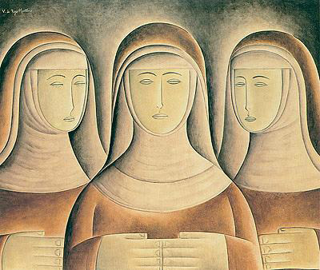
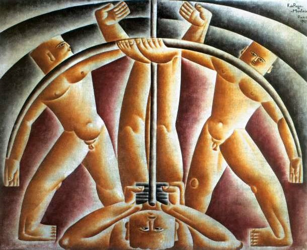
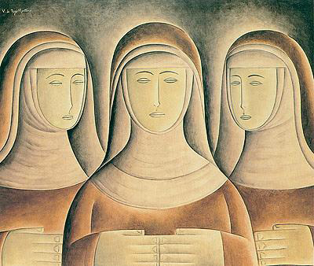
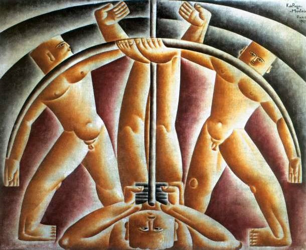
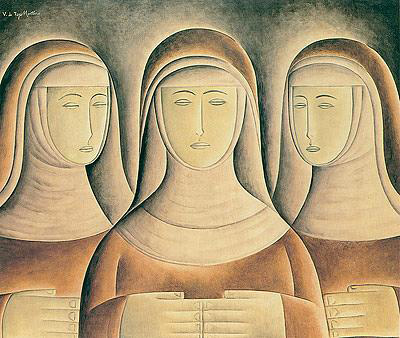
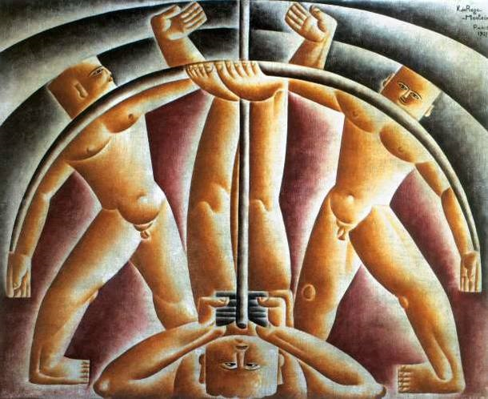

Vicente do Rego Monteiro (1899–1970) foi um importante pintor, ilustrador, poeta e artista modernista brasileiro. Nasceu em Recife (PE) e teve grande destaque durante o Movimento Modernista, sendo um dos artistas que buscou criar uma arte moderna com identidade nacional.
Estudou arte na França, onde teve contato com movimentos de vanguarda europeus, como o cubismo e o futurismo. Ainda assim, ele sempre procurou valorizar as raízes brasileiras, especialmente as culturas indígenas e nordestinas. Esse interesse aparece em muitas de suas obras, nas quais ele mistura influências europeias com temas nativos do Brasil.
Participou da Semana de Arte Moderna de 1922, em São Paulo, um marco na renovação artística e cultural do país.
Além da pintura, também se destacou como poeta simbolista e concretista, e fez ilustrações para livros de autores importantes.
Seu estilo é conhecido pelo uso de formas geométricas, cores fortes e temas ligados à identidade brasileira, principalmente nas representações de figuras indígenas e na religiosidade popular.

